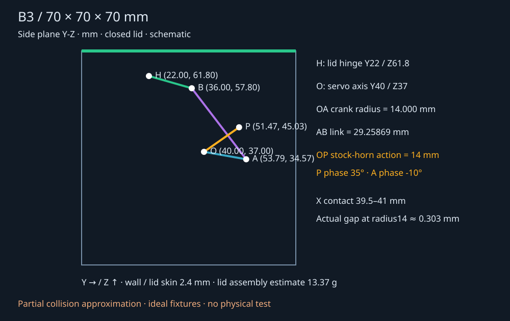

70 × 70 × 70 mm の凍結済みB3 CADへ、独立した物理検証画面を追加したものです。CADとSTLは変更していません。実物の印刷・組立・サーボ駆動は未実施です。
蓋角を直接動かす処理はありません。有限トルクのモーターがホーンを回し、ホーンの接触が受けカップを押し、リンクと理想ヒンジが蓋を動かします。動作確認は剛体計算の部分近似に限られます。
モデルラボでB3を選び「物理検証」へ進みます。「開く」「閉じる」「繰り返し」「停止」「初期状態へ戻る」を使えます。「停止」は現在のサーボ角を有限トルクで保持します。「一時停止」は計算時間を止めます。「電源断」でもホーンは残り、重力と接触の計算が続きます。
透過、衝突形状、接触点、軸と重心を切り替えられます。指令角・実サーボ角・実蓋角を別々に表示します。「記録を再生」とスライダーは過去の剛体姿勢を表示するだけで、計算結果を変更しません。記録再生中は接触・軸表示を省きます。0.25倍で見返せます。「ライブに戻る」で現在の計算へ戻ります。
条件を変更したら「条件を適用して初期化」。条件とログをJSONで保存できます。固定台モードが既定で、固定OFFは卓上の自由設置です。
電源断で戻る計算はギアを容易に逆駆動できる仮定です。実SG92Rのギア抵抗は未測定で、実機の電源断復帰を検証した結果ではありません。ホーン退避の重力落下試験は接触自体を外しており、電源断とは別です。

サーボ軸O: Y40 / Z37 mm。蓋軸H: Y22 / Z61.8 mm。カップのリンク軸AはOから14 mm、リンクABは29.25869 mm。閉時A: Y53.787 / Z34.569 mm、B: Y36 / Z57.8 mm。これは付属ホーンの14mm代表点とは位相が異なるため、同じ点として扱っていません。
実CADのX39.900037 mm断面で、ホーン長腕の半幅は半径14 mm地点で2.000 mm、受けカップ内側は2.303 mm、片側隙間は約0.303 mm。代表点モードの半径1.5mm球は隙間を近似し、ホーンの実幅を再現する形状ではありません。
既定は実CAD直線部を使った6凸形状（ホーン2、カップ4）です。長腕の直線部だけを抽出し、穴を埋め、先端曲面・短い腕・軸周り・軸方向保持を省きます。14mm代表点＋2面も比較用に選べます。CADモードでは「ホーン外周寸法差」入力を使いません。
元CAD断面の接触開始は相対角約±1.0687°。代表点の概算は±1.2279°で、通常ログの断面照合では最大0.02302 mmの幾何的重なりを見落としていました。6凸形状ではこの一断面での重なりは検出されませんでした。これは全CADの衝突検証ではありません。
TowerProのSG92R仕様の4.8 V時、停止トルク2.5 kgf·cm = 0.245166 N·m、無負荷0.1秒/60° = 10.472 rad/sを別々の端点として使います。その間の直線トルク速度曲線、制御ゲイン、回転子慣性は推定です。連続運転定格は作っていません。デモの停止トルク制限0.03 N·m、指令速度12°/秒は試験設定です。
蓋群の質量は一様な中実PLA（1260 kg/m³）で13.3726 g、重心X39.897 / Y45.338 / Z65.951 mm。慣性テンソルはCAD三角形の体積積分から計算しています。スピーカー参考質量12 g、サーボ9 g、ホーン0.8 gは仮定です。印刷のインフィル、接着物、実部品の差は未測定です。
接触摩擦係数0.25、軸の粘性抵抗0.00025 N·m·s/rad。軸の静止摩擦はモデル化していません。軸受抵抗は陰的な受動速度抵抗です。以前の大きな明示抵抗で生じた数値的不安定性を避けるため変更しました。接触の静摩擦と動摩擦は別定数にしていません。
Rapier 0.17.3、固定dt 1/960秒、12反復、内部PGS2、接触周波数6000、skin0.01mm。微小凸形状の計算のため内部長さを1000倍（mm）にし、慣性とトルクを100万倍に変換。質量・時間・角度は同じで、公開データはSIとmmです。接触・軸ずれは120Hz、ログは60Hzのサンプル最大で、全サブステップの最大とは限りません。
既定6凸形状: 安定到着 5.94375秒、蓋 65.33530°。8秒時点に閉指令を出すと、合計13.85313秒で閉状態。最大駆動トルク0.0040271 N·m、サンプル最大接触貫通0.000836 mm、軸ずれ0.001741 mm。
到着判定は65±0.5°を0.4秒維持し、その窓の蓋角変動が0.15°未満。閉時は0±0.5°。14秒で未到着なら「未到達」。高い粘性抵抗は遅延後のオーバーシュートで未到達となります。静止摩擦による完全停止とは言っていません。
dt半減では到着時刻差約0.00156秒、蓋角差約0.00133°（6凸形状）。6凸形状では反復24でも到着角差約0.00117°。代表点と6凸形状の到着蓋角差は0.11065°です。
| 試験 | 結果 | 終了蓋角 / 最大トルク |
|---|---|---|
| normal | 期待結果と一致 | -0.000° / 0.00403 N·m |
| zero_torque | 期待結果と一致 | 0.000° / 0.00000 N·m |
| horn_contact_disabled | 期待結果と一致 | 0.000° / 0.00007 N·m |
| gravity_fall | 期待結果と一致 | -0.000° / 0.00000 N·m |
| gravity_zero | 期待結果と一致 | 65.000° / 0.00000 N·m |
| weak_heavy | 期待結果と一致 | 0.000° / 0.00100 N·m |
| shaft_blocker | 期待結果と一致 | 3.558° / 0.02998 N·m |
| power_off_horn_present | 期待結果と一致 | 0.000° / 0.00403 N·m |
| heavy_load | 期待結果と一致 | 0.000° / 0.03000 N·m |
| coarse_solver_heavy | 期待結果と一致 | 0.000° / 0.03000 N·m |
| high_bearing_friction | 期待結果と一致 | 66.434° / 0.02975 N·m |
| high_contact_friction | 期待結果と一致 | -0.000° / 0.00403 N·m |
| low_contact_friction | 期待結果と一致 | 0.000° / 0.00403 N·m |
| small_horn | 期待結果と一致 | -0.000° / 0.00403 N·m |
| large_horn | 期待結果と一致 | -0.000° / 0.00593 N·m |
| nominal_uncompensated_angle | 期待結果と一致 | 63.937° / 0.00403 N·m |
| free_box_on_table | 期待結果と一致 | -0.000° / 0.00403 N·m |
| repeat | 期待結果と一致 | 14.217° / 0.00403 N·m |
| half_dt | 期待結果と一致 | -0.000° / 0.00401 N·m |
| solver_24 | 期待結果と一致 | -0.000° / 0.00402 N·m |
| cad_face_strips | 期待結果と一致 | 0.000° / 0.00403 N·m |
| cad_faces_no_contact | 期待結果と一致 | 0.000° / 0.00007 N·m |
| cad_faces_half_dt | 期待結果と一致 | 0.000° / 0.00401 N·m |
| cad_faces_solver_24 | 期待結果と一致 | -0.000° / 0.00402 N·m |
| parameter_validation | 期待結果と一致 | 入力拒否 |
| stop_spam_reset | 期待結果と一致 | 0.36378721319618634 |
「期待結果と一致」は、弱いモーター・重い蓋・障害物なら開けないという負の対照も含みます。大型ホーン寸法差と理想幾何角だけの指令では65°に安定到着しない例を保存しています。実機では隙間、重心、モーター挙動を測り、端点を校正してください。
数値精度の合格はサンプル最大貫通0.05mm以下、軸ずれ0.03mm以下です。角度が安定到着してもいずれかを超えると「角度到達・数値精度不合格」と表示し、成功と扱いません。自動試験は代表点と既定CAD接触の両方の収束を判定し、不合格で終了コード1になります。
既定6凸形状のログから20姿勢を選び、元CADを剛体姿勢へ配置し、AABB/BVH候補とBlender EXACT交差体積を照合しました。同じ剛体内と箱/固定カセット間を除外し、閾値0.005mm³を超えるその他の交差は0件。参考サーボ出力軸と参考ホーンの噛み合いは18件で、理想出力軸の接続として別記録しています。無効なBoolean結果は0件。完全に包まれた物体の包含チェックを省いており、連続運動の証明ではありません。
5つの理想回転軸、サーボと箱への取付、閉時0°ストッパー、軸方向保持は拘束条件です。蓋の開角65°を強制する拘束はありません（上側理想限界は75°）。保持部品13/20/21/22の脱落、スナップ部の曲げや強度、摩耗、クリープ、熱、破損、実ホーン装着は評価していません。Rapierの関節拘束説明のように、閉ループの拘束は誤差を持ち得るため軸ずれを記録しています。
モデルラボ稼働時: http://localhost:3000/viewer/physics-box/index.html。単体ZIPを展開した場合はこのフォルダーでHTTPサーバーを起動し、viewer/を開いてください。ネットへ公開する手順ではありません。
python -m http.server 8765 --bind 127.0.0.1 # ブラウザー: http://127.0.0.1:8765/viewer/ node verify.mjs node check_contact_section.mjs
Blender検証は check_logged_cad_poses.py のSOURCEを凍結済みeditable_cube_B3.blendへ合わせて実行します。元CADへ保存しません。出所SHA256: 1ababb93dba4ef81368ba7767d3b13f180b4e43a407c336acef9d6a9150ac4c6。
この追加物から新しく印刷する部品や追加購入品はありません。B3本体の印刷・組立は既存のB3ガイドとSTL一式を使います。通電前の手動可動確認と軽い蓋での低力試験が必要です。